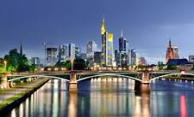
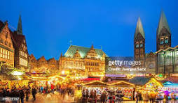

|
Ciudad
Asentamiento humano de tamaño considerable. El término «ciudad» tiene diferentes significados en todo el mundo, y en algunos lugares el asentamiento puede ser muy pequeño. Incluso cuando el término se limita a asentamientos más grandes, no existe una definición universalmente aceptada sobre el límite inferior de su tamaño. |
Estado
Organización política constituida por un conjunto de instituciones burocráticas estables, a través de las cuales ejerce el monopolio del uso de la fuerza (soberanía) aplicado a una población dentro de unos límites territoriales establecidos. |
Población
Conjunto de individuos, ya sean humanos u otros seres vivos, que habitan en un determinado lugar o área geográfica. 
|
|
| 1 |
Berlín
Con una población de 3,77 millones de habitantes en 2019, Berlín la ciudad más poblada de Alemania y de Europa Central, así como la primera ciudad en población y la cuarta aglomeración urbana de la Unión Europea |
Berlín
Berlín es un estado federado alemán (un Land) que funciona como una ciudad-estado y es, además, la capital de la República Federal de Alemania. Tras la Reunificación alemana en 1990, la ciudad que había sido dividida durante la Guerra Fría se unió para conformar el actual estado de Berlín, uno de los dieciséis estados federados de Alemania. 
|
3,543 676 |
| 2 |
Hamburgo
Oficialmente Ciudad Libre y Hanseática de Hamburgo. Ciudad-estado alemana Hamburgo es la cabeza de un área metropolitana de unos 5,3 millones de personas que ocupa además partes de los estados vecinos de Baja Sajonia y Schleswig-Holstein, lo que lo convierte en la segunda ciudad más poblada de Alemania. |
Hamburgo
Estado federal en Alemania llamado Ciudad Libre y Hanseática de Hamburgo y es una de las tres ciudades-estado alemanas (junto a Berlín y Bremen). |
1,724,309 |
| 3 |
Múnich
Es la capital del estado federado de Baviera, la tercera ciudad de Alemania por número de habitantes después de Berlín y Hamburgo y la undécima de la Unión Europea.
|
Baviera
Oficialmente Estado Libre de Baviera (Freistaat Bayern), es una región cultural y uno de los dieciséis estados federados de Alemania, siendo el más grande y el segundo más poblado de ellos, con 13,1 millones de habitantes. Se encuentra en el sureste del país, y su capital y ciudad más poblada es Múnich. |
1,388,308 |
| 4 |
Colonia
Ciudad del oeste de Alemania. Con alrededor de 1,1 millones de habitantes, es la cuarta ciudad más poblada del país –después de Berlín, Hamburgo y Múnich–, y la más poblada de la macrorregión metropolitana del Rin-Ruhr y del Estado federado de Renania del Norte-Westfalia, cuya capital, sin embargo, es Düsseldorf.
|
Renania del Norte-Westfalia
Renania del Norte-Westfalia posee en la actualidad cerca de 18 millones de habitantes (alrededor de 21% del total de Alemania), siendo por lo tanto el más poblado del país. 
|
1,013,665 |
| 5 |
Fráncfort del Meno
Ciudad financiera y comercial de Hesse, Alemania. Con 763 380 habitantes, es también la quinta ciudad más poblada del país (tras Berlín, Hamburgo, Múnich y Colonia). De acuerdo con Eurostat, la aglomeración urbana de la que Fráncfort forma parte cuenta con 2.500.000 habitantes. Aunque la capital administrativa de Hesse es Wiesbaden, Fráncfort tiene una importancia económica mayor tanto en el estado como en Alemania y en la Unión Europea. |
Hesse
La capital del estado es Wiesbaden, la ciudad más poblada es Frankfurt am Main. Otras grandes ciudades son las dos históricas ciudades residenciales de Darmstadt y Kassel, así como Hanau y Offenbach am Main. Limita al norte con Baja Sajonia, al oeste con Renania del Norte-Westfalia y Renania-Palatinado, al este con Baviera y Turingia y al sur con Baden-Württemberg.  |
676,533 |
| 6 |
Stuttgart
Es sede del parlamento de su Bundesland y su gobierno correspondiente, así como otras autoridades políticas y de la administración federal, contando también con el estatus de ciudad-distrito, unificada por un presidente. |
Baden-Württemberg
Es el tercer estado de Alemania, tanto en extensión (35.741 km²) como en población (10,8 millones de habitantes, equivalente a la población de toda Bélgica). La capital del estado y su ciudad más grande es Stuttgart. 
|
591,015 |
| 7 |
Düsseldorf
Es también conocida por su academia de Bellas Artes, con figuras de la talla de Joseph Beuys, Emanuel Leutze, August Macke, Gerhard Richter, Sigmar Polke y Andreas Gursky. En 2019 la consultora Mercer la situó como la sexta ciudad con más calidad de vida del mundo. 
|
Renania del Norte-Westfalia
El estado contribuye aproximadamente con el 22% del producto interior bruto de Alemania y se extiende sobre un área de 34.083 km². Renania del Norte-Westfalia se sitúa en la parte más occidental del país y comparte fronteras con Bélgica y los Países Bajos. 
|
589,649 |
| 8 |
Dortmund
Es la ciudad más grande de la Región del Ruhr con una población de 614.495 habitantes (a finales de 2024). Es considerada el centro administrativo, comercial y cultural del Ruhr oriental. El río Ruhr fluye al sur de la ciudad, y el pequeño río Emscher atraviesa el término municipal. |
Renania del Norte-Westfalia
El estado contribuye aproximadamente con el 22% del producto interior bruto de Alemania y se extiende sobre un área de 34.083 km². Renania del Norte-Westfalia se sitúa en la parte más occidental del país y comparte fronteras con Bélgica y los Países Bajos. 
|
571,403 |
| 9 |
Essen
Situada sobre el río Ruhr en el corazón de la Región del Ruhr. Cuenta con una población de 579.372 habitantes (2022), lo que la convierte en la cuarta más poblada del estado por detrás de Colonia, Düsseldorf y Dortmund y la novena del país. |
Renania del Norte-Westfalia
El territorio de Renania del Norte-Westfalia está ubicado al noroeste de Alemania y está dominado por la llanura de Westfalia. Las comarcas de Sauerland, Condado del Monte y Siegerland en el sur son boscosas con montañas de alturas comprendidas entre los 500 y los 800 metros. En el oeste están las cadenas montañosas de Eifel y la llanura del Rin.
|
565,900 |
| 10 |
Bremen
Es una ciudad del noroeste de Alemania, que forma junto con el puerto de Bremen o Bremerhaven, a unos 60 km al noroeste, la Ciudad Libre Hanseática de Bremen, o Estado de Bremen. |
Bremen (Estado)
Bremen es un estado federado y ciudad-estado de Alemania, formado por las ciudades de Bremen y Bremerhaven, separadas geográficamente. Es uno de los 16 estados de Alemania y, como otras ciudades-estado (Berlín y Hamburgo), se caracteriza por tener una administración que abarca los niveles de estado y municipio.  |
544,043 |
| 11 |
Dresde
Dresde tiene fama mundial en el sector cultural y artístico con una gran variedad de teatros como Semperoper, orquestas como la Orquesta Estatal Sajona, coros como Kreuzchor y famosos museos como la Galería de Pinturas de los Maestros Antiguos. |
Sajonia
Está ubicado en el centro-este del país y limita por el norte con Brandeburgo, por el noroeste con Sajonia-Anhalt, con Turingia por el oeste y toca Baviera en el sur. Además, tiene una frontera, también en el sur, con la República Checa y por el este con Polonia. Ambas se encuentran abiertas desde diciembre de 2007 gracias al Acuerdo de Schengen. Su capital es Dresde. 
|
525,105 |
| 12 |
Leipzig
La ciudad tiene una larga tradición de recinto ferial y una de las ferias más antiguas (1190) de Europa. Junto con Fráncfort del Meno, Leipzig es el centro histórico de la imprenta y el comercio. Además, cuenta con una de las universidades —tanto clásica como de música— más antiguas de Alemania. |
Sajonia
Las ciudades mayores por su número de habitantes son Leipzig, Dresde y Chemnitz. Zwickau perdió en 2003 su estatus de Ciudad Grande debido a la disminución de la población. Se lo había otorgado el Estado Federal con anterioridad cuando superó la barrera de los 100.000 habitantes. 
|
520,838 |
| 13 |
Hannover
Con una población de 535.932 habitantes en 2021 es la mayor ciudad del estado, la cuarta del norte de Alemania tras Berlín, Hamburgo y Bremen así como la decimotercera del país. Su área urbana comprende las vecinas localidades de Garbsen, Langenhagen y Laatzen con las que forma un continuo urbano de 791.000 habitantes (2018). El área metropolitana de la región de Hanóver cuenta en conjunto con 1.160.000 habitantes. |
Baja Sajonia
Tiene una población de cerca de ocho millones de habitantes repartidos sobre una superficie de 47.618 km². Se trata del segundo estado federado más extenso del país, tras Baviera, y del cuarto en población. En algunas zonas rurales se sigue hablando todavía el bajo alemán o bajo sajón (Plattdüütsch), y, en el distrito de Cloppenburg, el frisón oriental (Seeltersk). 
|
509,485 |
| 14 |
Núremberg
Su casco histórico le confiere un atractivo especial, al estar rodeado por una muralla medieval de más de 4 km (originalmente, 5 km) construida a partir de 1325. Esta muralla fue la tercera que se construyó debido al crecimiento de su población al paso de los años a fin de garantizar la seguridad de la ciudad. |
Baviera
Las tierras bávaras fueron habitadas antiguamente por los celtas vindelicios e incorporadas, en parte, al imperio romano, formando parte de la provincia de Recia, cuyo centro administrativo era Castra Regina, conocida desde la Edad Media como Ratisbona. 
|
495,121 |
| 15 |
Duisburgo
Durante la Edad Media fue una ciudad-estado y formó parte de la Liga Hanseática, evolucionando posteriormente hacia un gran polo industrial del hierro, el acero y la industria química, motivo por el cual fue fuertemente bombardeada durante la Segunda Guerra Mundial. |
Renania del Norte-Westfalia
El territorio de Renania del Norte-Westfalia está ubicado al noroeste de Alemania y está dominado por la llanura de Westfalia. Las comarcas de Sauerland, Condado del Monte y Siegerland en el sur son boscosas con montañas de alturas comprendidas entre los 500 y los 800 metros. 
|
487,470 |